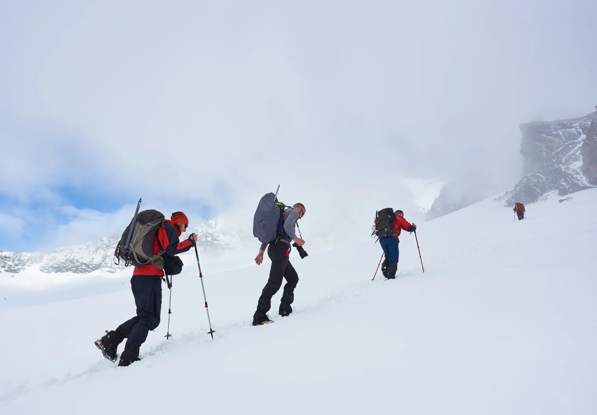

- Brahmatal is a winter trek from Lohajung over a ridge to two lakes and a summit near 3,734 to 3,846 m (operators differ), graded easy to moderate.
- Snow and frozen lakes come December to February; operators also run it in autumn and spring.
- Costs on operators' own pages range from ₹6,499 to ₹10,500 plus 5% GST depending on transport; confirm, as prices change.
The Brahmatal trek is a five- to six-day winter walk from Lohajung in Uttarakhand to a ridge and two lakes, with Trishul and Nanda Ghunti in view. It is graded easy to moderate; snow is best from December to February and operators' base prices range from ₹6,499 to ₹10,500 plus 5% GST.
Who is the Brahmatal trek for?
First-timers who want snow without a technical climb. Bikat describes it as suitable for beginners and suggests jogging 3 km in 25 to 30 minutes plus leg-strength work. Himalayan Dream Treks rates it easy to moderate and says there is no technical climbing, but winter snow and ice make it physically harder. Days of 6 to 8 hours are normal. Explore the route on the Brahmatal 3D page, or see Kedarkantha if you want shorter days.

Brahmatal trek itinerary
This is Bikat Adventures' plan from Lohajung; the Dehradun legs are its transport add-on.
| Day | Route | Distance and time | Sleep at |
|---|---|---|---|
| 1 | Dehradun → Lohajung (drive) | 294 km, 11–12 h | 2,331 m |
| 2 | Lohajung → Gujreni / Lower Bekaltal | 6 km · 4–5 h | 2,750 m |
| 3 | Gujreni → Brahmatal | 5 km · 4–5 h | 3,400 m |
| 4 | Brahmatal Top (3,846 m) and back | 6 km · about 4 h | 3,400 m |
| 5 | Brahmatal → Lohajung | 11 km · 7–8 h | 2,331 m |
| 6 | Lohajung → Dehradun | 294 km, 11–12 h | – |
Himalayan Dream Treks runs a similar route with Day 3 going via Jhandi Top and the top at about 12,250 ft, and notes water is scarce above Tilandi, so carry 2 to 3 litres. Bikat's page is inconsistent on total distance (35 km in one place, 28 km from the day figures), so use the daily numbers.
Best time for Brahmatal
- December to February: snow and frozen lakes. Himalayan Dream Treks gives days of about 5 to 6 °C and nights from 0 to −8 °C, with January usually the most reliable for snow.
- March and April: milder weather and rhododendron blooms (Himalayan Dream Treks).
- October and November: clear skies; Bikat recommends these months for views.
- Monsoon (June to September): heavy rain, 12 to 20 °C on Bikat's page. Not the time for this trek.
Bikat's batches run from 21 November 2026 to 1 April 2027. Month guides: December, January, February.

How to reach Lohajung
Lohajung is the trailhead. Himalayan Dream Treks lists Rishikesh to Lohajung at 246 km (7 to 8 hours) by road; Bikat's route from Dehradun is 294 km and 11 to 12 hours. Public transport is a chain: bus from Rishikesh to Karnaprayag, another to Tharali, then a local taxi. Himalayan Dream Treks suggests arriving a day early. Our trek page has cab and bus notes with their sources.
Brahmatal trek cost
- Bikat Adventures: ₹10,500 plus 5% GST, with Dehradun transport ₹3,000, backpack offloading ₹1,600 and a single tent ₹1,500.
- Himalayan Dream Treks: ₹6,499 plus GST without transport, or ₹8,499 plus GST including Rishikesh transport. Insurance and meals during transfers are not included.
These are base prices from each operator's own page in October 2026. They change every season, and what is included differs.
Permits and fees
Operators arrange forest permits and include them. Himalayan Dream Treks says you need a government ID (Aadhaar, PAN or voter ID) for the permit, and that foreign nationals pay different permit charges, so confirm with the operator before booking. Bikat includes permits and camping charges only up to the Indian rate. Carry ID and a medical certificate.
What makes Brahmatal hard
- Snow and ice: Bikat notes snow can reach knee depth on the climb to the top.
- Long days: day 5 is 11 km and 7 to 8 hours down to Lohajung.
- Steep sections: the climbs to Bekaltal and to Jhandi Top are the steepest, says Himalayan Dream Treks.
What to pack
Thermals, a padded jacket, a waterproof shell, waterproof gloves, trek shoes with grip (microspikes if your operator does not supply them), 2 to 3 litres of water capacity, toilet paper and a power bank. Full list: Himalayan trek packing list.
Safety and altitude
The CDC's Yellow Book advises that above 3,000 m, sleeping altitude should rise by no more than about 500 m a night. On Bikat's plan the biggest step is day 3 (+650 m to about 3,400 m), and you sleep at the same place after the top. Treat headache with nausea, fatigue or dizziness as a reason to rest; worsening symptoms mean going down. See altitude sickness on treks and how to read altitude gain. Talk to a doctor first if you have a medical condition.
Before you book: a short checklist
- Check which start point the price uses: Lohajung, Rishikesh or Dehradun. The gap between the cheapest and dearest prices is mostly transport.
- Ask how the operator handles the summit if the snow is deep, and whether microspikes and gaiters are supplied.
- Ask about the altitude of the top they use (3,734 m or 3,846 m), so you can compare plans fairly.
- Bikat caps its batches at 15 people, and its cancellation terms change with the days left, so read them before paying.
- Get insurance, and start training early; see get fit for a Himalayan trek.
Sources
- Bikat Adventures: Brahmatal itinerary and price
- Himalayan Dream Treks: Brahmatal trek
- CDC Yellow Book: High-altitude travel and altitude illness
Quick questions
Is Brahmatal good for beginners?
Bikat Adventures calls it one of the easiest Himalayan treks and suitable for beginners, but winter snow and ice make it harder. Build stamina for 6 to 8 hour days.
Which is better, Brahmatal or Kedarkantha?
Both are winter treks of about five days. Kedarkantha has a single summit and short days; Brahmatal adds two lakes and longer days. Our comparison sets them side by side.
Is there snow on Brahmatal in March?
Less than in January. Himalayan Dream Treks lists March to April as spring with rhododendron blooms and milder weather, and December to February as the snow months.
How high is Brahmatal Top?
Operators disagree: Himalayan Dream Treks gives about 12,250 ft (about 3,734 m) and Bikat gives 3,846 m. Ask your operator which they use.